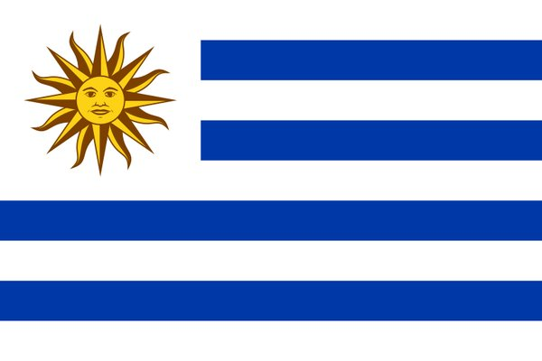

Marcos Silvera
About Me
My name is Marcos Silvera, and I live in Uruguay with my wife. I have been working as a high school math teacher since 2017, and I truly enjoy helping my students grow and understand the world through mathematics. I'm currently studying software development through BYU-Pathway Worldwide, and I love learning new technologies such as HTML, CSS, JavaScript, Python, and C#. My goal is to combine education and technology to create tools that make learning more dynamic and accessible.
Uruguay
Uruguay is a small but beautiful country located in South America, bordered by Argentina and Brazil. It is known for its peaceful society, quality of life, and strong democratic traditions. Uruguay has a rich culture influenced by European immigration, and it is famous for its beaches, mate (a traditional herbal drink), tango music, and passionate football fans. The capital city, Montevideo, offers a mix of colonial architecture, a vibrant coastline, and modern urban life.
My Goals
My goal is to improve my web development skills and apply them in educational tools and dynamic web applications that help students learn more effectively
Some of the plataforms I've used to study programming include: